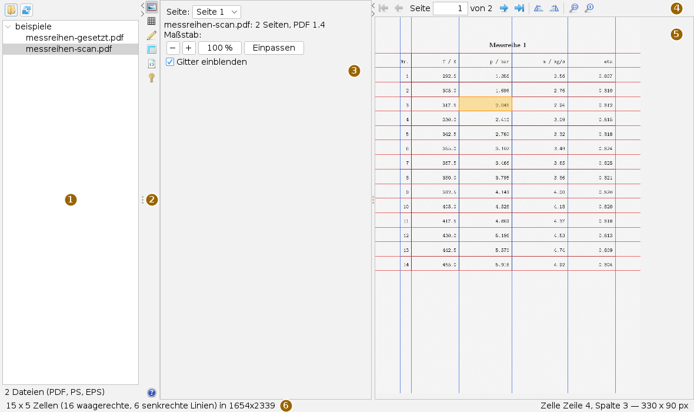
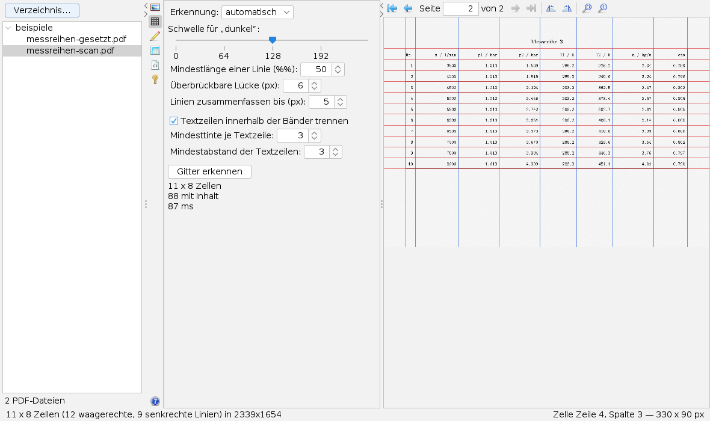
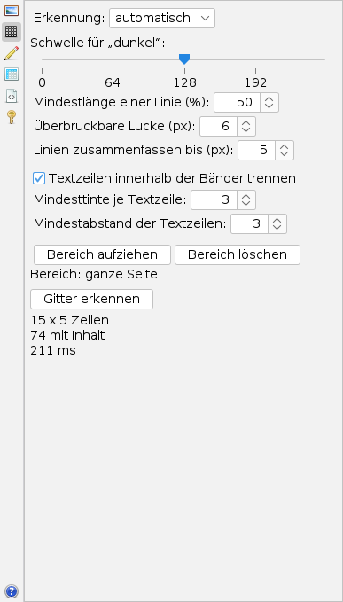
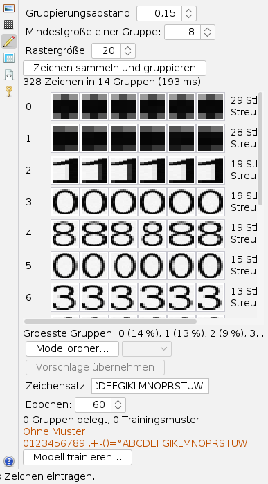
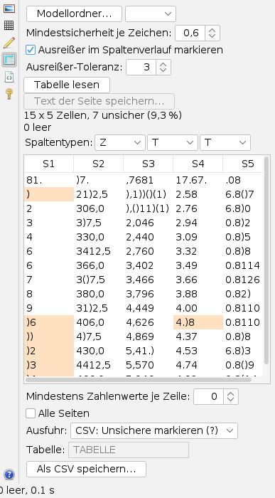
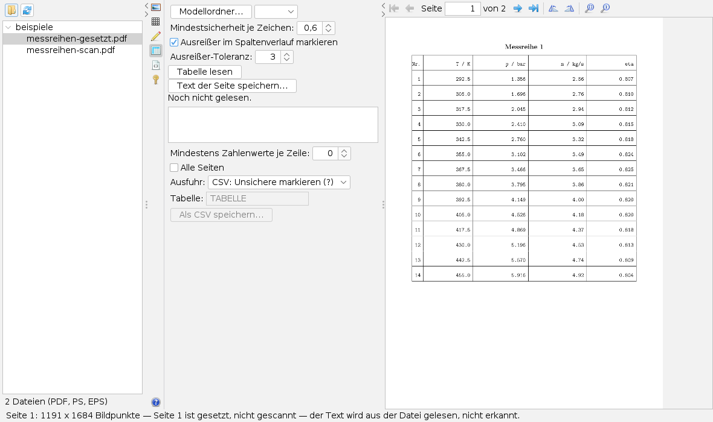

Den PDF-Digitizer bedienen
Bedienseite, Stand 06.10.2026. Wie man eine PDF-Datei öffnet, das Tabellengitter erkennt, Zeichen sammelt, die Tabelle liest, prüft und als CSV oder in eine Datenbank schreibt. Die Bilder sind Bildschirmfotos der App mit einer frei erfundenen Messreihe.
Das Fenster
Die App öffnet man im Menü Anwendungen mit PDF-Digitizer oeffnen… oder mit Alt+P. Einstellungen stehen in Karten neben der Seite, nicht in eigenen Fenstern.

Beide Trennlinien lassen sich verschieben oder mit den kleinen Pfeilen ganz zuklappen; so bekommt eine breite Seite den ganzen Platz. Rote Linien in der Ansicht trennen Zeilen, blaue Spalten. Ein Klick in eine Zelle hebt sie hervor, und die Statuszeile nennt rechts Zeile, Spalte und Größe in Bildpunkten.
Die Leisten
Die Knöpfe tragen nur Symbole; was sie tun, steht im Tooltip. Die senkrechte Leiste wählt die Karte.
| Symbol | Tooltip | Was geschieht |
|---|---|---|
 | Seite — Datei und Zoom | Seite wählen, Maßstab, Gitter ein- und ausblenden. |
 | Gitter — Tabellenstruktur erkennen | Zeilen und Spalten finden. |
 | Zeichen — Zeichengruppen etikettieren und Modell trainieren | Einen Erkenner auf der Schrift der Vorlage anlernen. |
 | Lesen — Tabelle auslesen und als CSV speichern | Zellen lesen, prüfen, korrigieren, ausgeben. |
 | PostScript — PostScript- und EPS-Dateien anzeigen (.ps, .eps) | PostScript laden und in die Seitenansicht zeichnen. |
 | Passwort — Passwort für eine verschlüsselte PDF eingeben | Erscheint von selbst, wenn eine Datei ein Passwort verlangt. |
 | Hilfe | Die eingebaute Hilfe an Stelle der Karte; Schließen führt zur Karte Seite. |
Die Leiste über der Seitenansicht blättert, dreht und zoomt:
| Symbol | Tooltip | Was geschieht |
|---|---|---|
| Erste Seite, Vorige Seite | Zurückblättern. | |
| Nächste Seite, Letzte Seite | Vorblättern. Dazwischen steht „Seite [n] von N“; Nummer eintippen und Eingabetaste springt. | |
  | Seite um 90° gegen den Uhrzeigersinn drehen, … im Uhrzeigersinn drehen | Dreht das Seitenbild selbst; ein erkanntes Gitter gilt danach nicht mehr. |
  | Seite einpassen, Originalgröße (100 %) | Ganze Seite sichtbar, oder ein Bildpunkt je Bildschirmpunkt. |
Eine Tabelle auslesen
- Links über dem Baum das Ordnersymbol (Arbeitsverzeichnis mit PDF-Dateien wählen) drücken und einen Ordner wählen; das Symbol daneben liest ihn neu ein. Die App sucht darin bis sechs Ebenen tief nach PDF-, PS- und EPS-Dateien und zeigt sie als Baum; ein laufendes Einlesen lässt sich abbrechen.
- Eine Datei im Baum anklicken. Gezeichnet wird zunächst nur die erste Seite, die übrigen beim Blättern.
- Karte Gitter, Gitter erkennen. Die Linien erscheinen in der Ansicht, die Karte nennt Zeilen, Spalten und die Zellen mit Inhalt.
- Liegt für diese Schrift noch kein Modell vor: Karte Zeichen, Gruppen beschriften, Modell trainieren….
- Karte Lesen: mit Modellordner… das Modell wählen, Tabelle lesen, die schattierten Zellen prüfen und berichtigen.
- Ausgabeart wählen und Als CSV speichern….
Seiten ansehen und drehen

Die Karte Seite hat die Seitenauswahl, eine Zeile mit Dateiname, Seitenzahl und PDF-Version, die Knöpfe −, + (je Faktor 1,25), 100 % und Einpassen sowie Gitter einblenden. Das Mausrad über der Seite zoomt immer; gerollt wird mit den Balken. Die Statuszeile nennt die Größe der Seite in Bildpunkten.
Seiten, die in der Datei als gedreht vermerkt sind, zeigt die App schon richtig herum. Steht eine Tabelle trotzdem quer, dreht man die Seite mit der Blätterleiste; die Drehung gilt je Seite und auch für das Lesen. Danach das Gitter neu erkennen.
Das Gitter erkennen

Erkennung: automatisch sucht erst gezogene Linien und nimmt, wenn keine Spalte oder keine Zeile zu finden ist, die Spalten aus den freien Gassen im Weißraum; Linien und Weißraum erzwingen einen Weg. Hat der Weißraum gegriffen, sagt es die Statuszeile.
Schwelle für „dunkel“ (Vorgabe 128) trennt Tinte von Papier. Die Mindestlänge einer Linie (50 Prozent der Bildkante) ist der wichtigste Regler: Füllt die Tabelle nur einen Teil der Seite, findet sie zu wenige Linien, dann den Wert senken. Überbrückbare Lücke (6 px) hilft, wenn Schrift die Linien unterbricht, Linien zusammenfassen bis (5 px) bei dicken oder doppelten Linien.
Textzeilen innerhalb der Bänder trennen teilt Bänder zwischen weit auseinanderliegenden Linien in einzelne Textzeilen; Mindesttinte je Textzeile und Mindestabstand der Textzeilen (je 3) steuern das.
Zeichen lernen

Ein Erkenner liest eine Druckschrift erst dann verlässlich, wenn er auf ihr trainiert ist. Zeichen sammeln und gruppieren schneidet alle Zeichen aus den Zellen des erkannten Gitters und fasst gleich aussehende zusammen (Vorgaben: Gruppierungsabstand 0,15, Mindestgröße 8, Rastergröße 20).
Jede Zeile beginnt mit der Nummer und dem Feld für das Zeichen; zum Auslassen leer lassen. Dahinter stehen vier Beispiele, dann Anzahl und Streuung, ab 0,08 orange: Dann enthält die Gruppe vermutlich zwei Zeichen und bleibt besser leer. Unten meldet die Karte, welche Zeichen des Zeichensatzes noch ohne Muster sind.
Modell trainieren… fragt nach einer .ennet-Datei. Die gemeldete Validierungsgenauigkeit gilt nur für Zeichen aus diesem Druck. Mit Modellordner… lassen sich vorhandene Modelle nach Übereinstimmung reihen; Vorschläge übernehmen füllt nur leere Felder und nur ab 0,80 je Zeichen, unter 0,98 Gesamtübereinstimmung mit Warnung.
Lesen, prüfen und speichern

- Modellordner… wählen und das Modell aus der Liste nehmen. Ohne Modell fragt die App vorher nach und liest mit dem Schablonenvergleich; das Bild zeigt, wie das ausgeht.
- Mindestsicherheit je Zeichen (0,6), Ausreißer im Spaltenverlauf markieren und Ausreißer-Toleranz (3) einstellen, Tabelle lesen.
- Unsichere Zellen sind orange hinterlegt. Zellen lassen sich direkt bearbeiten; eine geänderte Zelle gilt danach nicht mehr als unsicher.
- Unter Spaltentypen steht je Spalte T (Text), Z (Zahl) oder G (gemischt, Zahl mit vorangestellter Marke). Eine Änderung wendet die Prüfungen sofort neu an, ohne neu zu lesen.
- Ausfuhr wählen und speichern.
| Ausfuhr | Ergebnis |
|---|---|
| CSV: Unsichere markieren (?) | Ein Fragezeichen am unsicheren Wert. Die Vorgabe. |
| CSV: Nur Werte | Reine Werte. Waren Zellen unsicher, warnt die App nach dem Speichern. |
| CSV: Werte + Begleitdatei | Eine zweite Datei mit den Markierungen. |
| H2-Datenbank | Eine Tabelle mit dem Namen aus Tabelle; je Wertspalte eine Spalte …_UNSICHER. |
Trennzeichen der CSV ist das Semikolon. Mindestens Zahlenwerte je Zeile lässt Kopf- und Fußzeilen weg (0 = alle). Mit Alle Seiten liest die App jede Seite mit eigenem Gitter und schreibt alles in eine Datei, die Seitennummer als erste Spalte; das verlangt ein Modell und eine schon gelesene Seite, weil der Speicherknopf erst danach frei wird.
„0 unsicher“ heißt nicht „0 falsch“. Verwechselt ein Erkenner ein Zeichen immer gleich, bleibt jede Spalte stimmig, und keine Prüfung schlägt an. Deshalb auch unmarkierte Zellen stichprobenweise gegen die Vorlage lesen.
Gesetzte Seiten

Trägt eine Seite sichtbaren Text, etwa aus einem Textsatzprogramm, zeichnet die App die Textschicht und erkennt nicht. Tabelle lesen meldet dann, dass die Seite gesetzt ist; Text der Seite speichern… schreibt ihren Text als UTF-8-Datei, aus der Datei gelesen statt erkannt. Bei einem Scan ist dieser Knopf gesperrt.
PostScript und Passwort
Die Karte PostScript lädt mit Datei öffnen… eine PS- oder EPS-Datei; Dateien aus dem Baum gehen denselben Weg. Auflösung (Vorgabe 150, 36 bis 600 Punkte je Zoll) und Neu zeichnen bestimmen die Schärfe. Danach arbeiten Gitter, Zeichen und Lesen wie bei einem Scan; was der Auswerter nicht deuten konnte, steht in der Karte.
Verlangt eine PDF ein Passwort, schaltet die Leiste auf die Karte Passwort: eingeben, Öffnen oder Eingabetaste. Ein falsches Passwort meldet die Karte; das Feld wird nach jedem Versuch geleert, und behalten wird das Passwort nicht.
Was gespeichert wird
Beim Sichern des Arbeitsbereichs merkt sich die App nur, dass ihr Reiter offen ist. Das zuletzt eingelesene Verzeichnis dient beim nächsten Verzeichnis… als Startordner; eingelesen wird es erst auf Wunsch. Gitter, Etiketten und gelesene Tabellen gehen beim Schließen verloren: Ergebnisse gehören in die CSV, die Datenbank oder eine Modelldatei.
Tastatur und Maus
Alt+P öffnet die App. Im Seitenfeld der Blätterleiste und im Passwortfeld löst die Eingabetaste aus. Das Mausrad zoomt die Seite in Schritten von 15 Prozent; ein Klick wählt eine Zelle. Weitere Tastenkürzel hat die App nicht.
Grenzen
- Das Gitter ist immer ein Rechteckgitter; verbundene Zellen werden nicht erkannt.
- Die Mindestlänge bezieht sich auf die ganze Seite. Einen Tabellenbereich im Bild aufziehen kann man in der Oberfläche nicht.
- Auf gescannten Seiten wird das Bild beim Zoomen nicht schärfer; gesetzte Seiten und PostScript zeichnet die App dafür neu.
- Vorgehalten werden die zuletzt gezeichneten sechs Seiten; sehr große Dateien bleiben so bedienbar.
Symbole: Fugue Icons von Yusuke Kamiyamane, Lizenz CC BY 3.0.